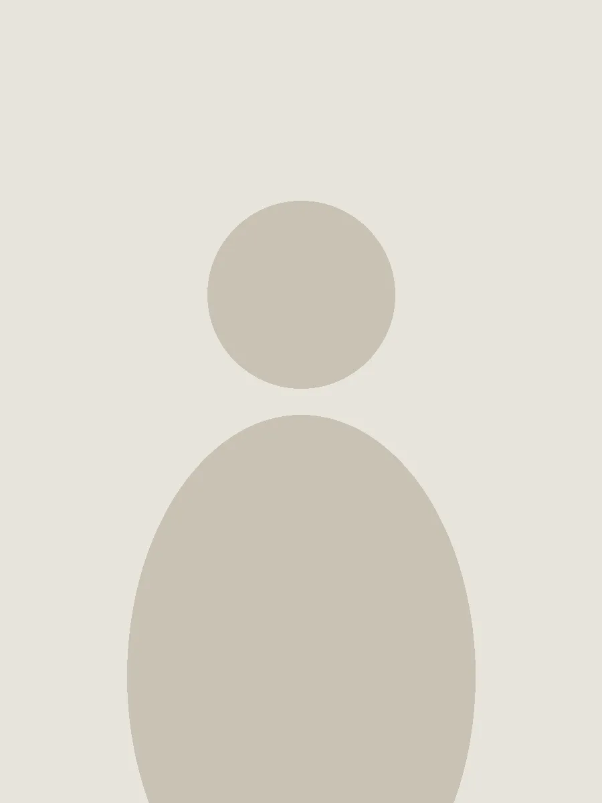

ENSEEIHT · Toulouse
Engineering studies in Sciences Numériques (SN), with a growing focus on digital systems and hardware.
Portfolio · 2026
First-year engineering student in digital sciences at ENSEEIHT, Toulouse.
Discover my profile
Engineering student · Digital sciences
I am a first-year student in the digital sciences department at ENSEEIHT in Toulouse. I am drawn to the way computing systems work beneath the surface, from logic circuits to processors.
A focus on digital hardware
I want to deepen my knowledge of microelectronics, with a particular interest in CPU and logic-circuit design. In the long term, I hope to contribute to the development of processors and other digital hardware.
I am especially interested in the work of companies such as STMicroelectronics, NVIDIA, Intel, AMD and Arm.
Learning by building and doing
Engineering studies in Sciences Numériques (SN), with a growing focus on digital systems and hardware.
Preparatory classes in MP2I and MPI, building a foundation in mathematics, computing and engineering sciences.
Growing and selling tomatoes during summer breaks meant caring for as many as 400 plants. It called for steady hands-on work and attention to planning, upkeep and logistics.
Interests beyond the classroom
In my free time, I enjoy tinkering with computers, programming and riding motorcycles. At home, I share life with three cats: Dino, Alphonse and Clandestina.
Personal work and experimentation
An Asteroids-inspired game built around evasive play. The camera follows the player through an expanding playfield, where asteroids must be avoided rather than destroyed.
A high-speed voxel generation system developed in Rust with the Bevy game engine for an unfinished game project.
A genomic evolver for the programming game Core War, developed as part of my TIPE project.
A CPU designed in Logisim, exploring processor architecture and digital logic through hands-on experimentation.